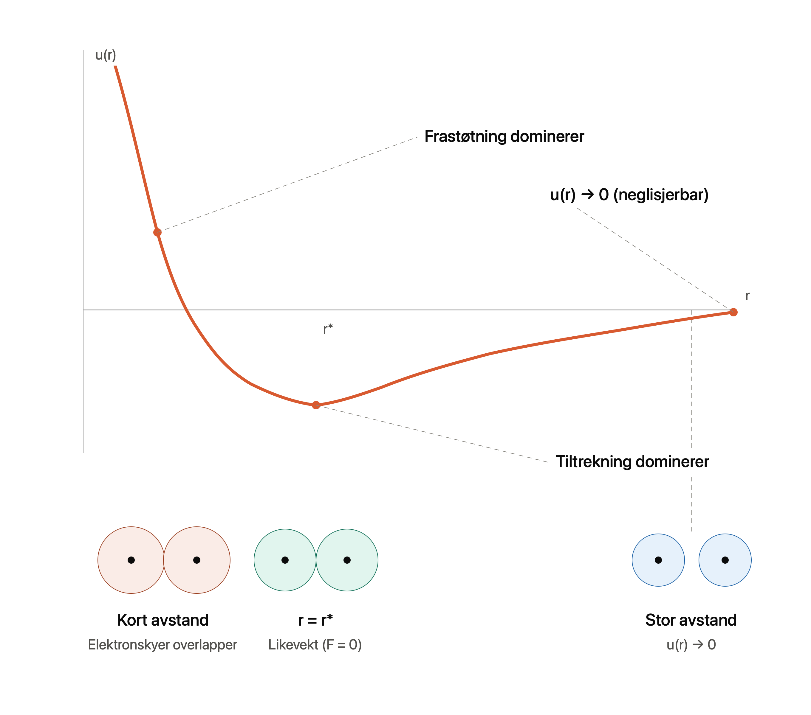
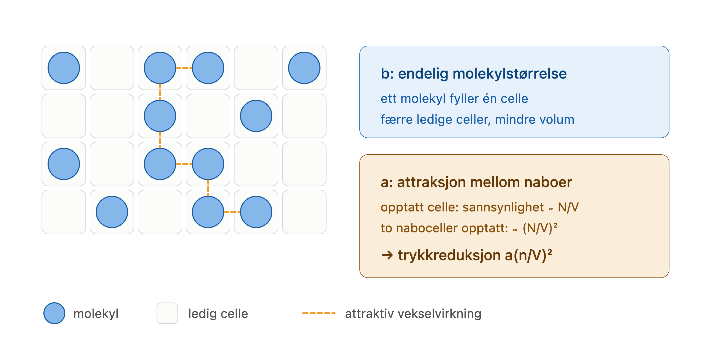

Intermolekylære krefter og reelle gasser#
Læringsmål
Etter å ha arbeidet med dette kapitlet skal du kunne:
forklare hvorfor idealgassmodellen ikke kan beskrive kondensasjon og andre tydelige avvik fra ideell gassoppførsel
forklare forskjellen mellom Keesom-, Debye- og London-krefter og knytte dem til permanente, induserte og midlertidige dipoler
tolke et parpotensial og forklare betydningen av \(\varepsilon\), \(\sigma\) og likevektsavstanden i Lennard–Jones-potensialet
forklare hva parameterne \(a\) og \(b\) i van der Waals-likningen representerer fysisk, og bruke likningen i enkle beregninger
Fra ideelle til reelle gasser#
I forrige kapittel behandlet vi gassmolekylene som punktpartikler uten intermolekylære krefter. Det ga oss idealgassloven, men modellen kan ikke forklare kondensasjon eller avvikene vi ser ved høyt trykk og lav temperatur. Nå skal vi derfor se på de to faktorene som idealgassmodellen ser bort fra: at molekyler vekselvirker og opptar plass.
Avkjøl argongass nok, og den blir til en væske. Det virker kanskje helt naturlig; mange stoffer kan jo gå fra gass til væske. Men hvis vi stopper opp og tenker etter, er det egentlig ganske merkelig. Argon består av elektrisk nøytrale atomer uten permanent dipolmoment. Ved første øyekast finnes det derfor ingen åpenbar grunn til at atomene skulle tiltrekke hverandre. Likevel gjør de det, sterkt nok til at gassen kan kondensere.
I dette kapittelet skal vi se på de svake kreftene som virker mellom separate atomer og molekyler. Selv om disse kreftene er mye svakere enn kjemiske bindinger som ionebindinger og kovalente bindinger, er de avgjørende for at væsker og mange faste stoffer i det hele tatt kan eksistere i den tilstanden.
Hvordan kan vi beskrive slike interaksjoner? I stedet for å starte med selve kraften, er det mer nyttig å beskrive den potensielle energien mellom to partikler. Denne energien avhenger av avstanden mellom dem og skrives som \(u(r)\), der \(r\) er avstanden mellom partiklene. Når partiklene beveger seg nærmere hverandre eller lenger fra hverandre, endrer den potensielle energien seg. Noen avstander er mer energetisk gunstige enn andre.
Men den potensielle energien er bare én del av historien. Partiklene er hele tiden i bevegelse, og den gjennomsnittlige kinetiske energien øker med temperaturen. Ved høy temperatur kan partiklene lettere bevege seg bort fra hverandre. Ved lav temperatur får de svake tiltrekkende kreftene større betydning.
Om et stoff opptrer som en gass, en væske eller et fast stoff, bestemmes derfor av samspillet mellom molekylenes energi, entropi, temperatur og trykk. I dette kapitlet skal vi utvikle en enkel modell for denne balansen. Den gir oss et rammeverk for å forstå hvorfor stoffer kondenserer, hvorfor molekyler foretrekker bestemte avstander fra hverandre, og hvordan dette kan beskrives med blant annet Lennard–Jones-potensialet.
Fra Coulombs lov til parpotensial#
Coulombs lov beskriver den elektriske kraften mellom to ladninger. Kraften øker når ladningene blir større, og når avstanden mellom dem blir mindre. Velger vi positiv retning utover fra den ene ladningen, kan kraften skrives som
der \(q_1\) og \(q_2\) er ladningene og \(r\) er avstanden mellom dem. Et positivt fortegn gir frastøtning, mens et negativt fortegn gir tiltrekning. Her er \(\varepsilon_0\) permittiviteten i tomt rom, altså en konstant.
Coulombs lov kan ikke forklare alle intermolekylære vekselvirkninger. Mange molekyler er elektrisk nøytrale og har ikke permanente dipoler, men tiltrekker likevel hverandre. For eksempel kan nitrogen \(N_2\) og edelgasser kondensere til væske ved lave temperaturer.
For å beskrive slike vekselvirkninger trenger vi en mer generell modell. I stedet for å beskrive kraften mellom to punktladninger, beskriver vi den potensielle energien mellom to partikler som en funksjon av avstanden mellom dem. Denne beskrivelsen kalles et parpotensial \(u(r)\), og danner grunnlaget for å forstå intermolekylære interaksjoner.
Underveisoppgave
Coulombs lov gir den radielle kraftkomponenten mellom to ladninger: \(F_r = \frac{q_1 q_2}{4\pi\varepsilon_0 r^2}\). Svar på følgende uten å regne - tenk bare på hvordan \(F_r\) endrer seg.
a) Hva skjer med kraften hvis du dobler den ene ladningen \(q_1\)? Hva hvis du dobler begge ladningene samtidig?
b) Hva skjer med kraften hvis du dobler avstanden \(r\) mellom ladningene? Blir endringen større eller mindre enn i a)? Forklar hvorfor.
c) Tenk deg at \(q_1\) er positiv og \(q_2\) negativ. Hva sier fortegnet til \(F\) da, og hva betyr det fysisk for hvordan ladningene beveger seg i forhold til hverandre?
Løsningsforslag
a) Kraften er proporsjonal med hver av ladningene. Dobler du \(q_1\), blir kraften dobbelt så stor. Dobler du begge samtidig, blir kraften \(2 \times 2 = 4\) ganger så stor, siden produktet \(q_1 q_2\) firedobles.
b) Kraften avtar med kvadratet av avstanden (\(F \propto 1/r^2\)). Dobler du avstanden, blir kraften \(\frac{1}{2^2} = \frac{1}{4}\) av det den var - altså fire ganger svakere. Endringen er kraftigere enn ladningseffekten i a), fordi avstanden står i annen potens: en liten økning i \(r\) gir et stort fall i kraft.
c) Med én positiv og én negativ ladning blir produktet \(q_1 q_2\) negativt, så \(F_r\) blir negativ. Et negativt fortegn betyr at kraften peker innover og er tiltrekkende. Er ladningene like, blir \(F_r\) positiv og kraften frastøtende.
Parpotensialet \(u(r)\)#
Definisjon - Parpotensial
Et parpotensial \(u(r)\) beskriver den potensielle vekselvirkningsenergien mellom to partikler som en funksjon av avstanden \(r\) mellom dem.
Potensiell energi som funksjon av avstand skrives også ofte \(V(r)\). Her bruker vi \(u(r)\) for å unngå å forveksle den med volumet \(V\).
Et typisk parpotensial har denne formen:

Når partiklene er langt fra hverandre, er vekselvirkningen neglisjerbar, og \(u(r) \to 0\).
Når de kommer nærmere, dominerer de tiltrekkende kreftene, slik at den potensielle energien avtar. Dersom partiklene presses enda tettere sammen, øker energien raskt fordi frastøtende krefter blir dominerende.
Denne frastøtningen skyldes både elektrostatisk frastøtning mellom like ladninger og at elektronskyene begynner å overlappe. Ved slik overlapp blir Pauli-prinsippet viktig: to elektroner kan ikke befinne seg i samme kvantetilstand, noe som gir opphav til en sterk, korttrekkende frastøtning.
Ved en bestemt avstand, \(r^*\), balanserer de tiltrekkende og frastøtende bidragene hverandre. Her har \(u(r)\) et minimum, nettokraften mellom partiklene er null, og \(r^*\) er likevektsavstanden for partikkelparet.
Mange parpotensialer har en frastøtende del ved korte avstander og en tiltrekkende del ved noe større avstander. Parpotensialet beskriver den samlede virkningen av flere fysiske bidrag. Den bratte frastøtningen ved korte avstander skyldes i stor grad overlapp mellom elektronskyene, mens den tiltrekkende delen kan ha flere opphav.
For å forstå den tiltrekkende delen skal vi se nærmere på permanente, induserte og midlertidige dipolmomenter. Disse gir opphav til de intermolekylære vekselvirkningene som samlet kalles van der Waals-krefter.
Underveisoppgave
For ioner som \(Na^+\) og \(Cl^-\) er svaret intuitivt. Coulombs lov forklarer tiltrekningen direkte. Men hva med to nøytrale molekyler som verken har positiv eller negativ nettoladning? Hvordan kan slike molekyler likevel tiltrekke hverandre?
Løsningsforslag
Selv om molekylet er nøytralt, er ladningen ikke jevnt fordelt inni det. Elektronene beveger seg, og kan i et øyeblikk være forskjøvet mot én side, så molekylet får en litt positiv og en litt negativ ende - en momentan dipol. Denne påvirker nabomolekylet og skaper en tilsvarende forskyvning der, så de trekkes svakt mot hverandre. Coulombs lov gjelder altså fortsatt, det er de små, ujevne ladningene inni molekylene som tiltrekker - ikke en nettoladning. Dette kalles van der Waals-krefter.
Permanente, induserte og midlertidige dipolmomenter#
Parpotensialet viser hvordan vekselvirkningsenergien varierer med avstanden, men forteller ikke i seg selv hva som skaper tiltrekningen. For å forstå den tiltrekkende delen må vi se nærmere på hvordan positiv og negativ ladning er fordelt i atomene og molekylene.
Ladningsfordelingen kan være permanent skjev, bli forskjøvet av en annen partikkel eller variere fra øyeblikk til øyeblikk. I alle disse tilfellene kan det oppstå en ladningsseparasjon som beskrives ved hjelp av et dipolmoment.
Definisjon – dipolmoment og polariserbarhet
Et dipolmoment beskriver separasjonen mellom positiv og negativ ladning i et atom eller molekyl. Dipolmomentet har både størrelse og retning.
Polariserbarheten beskriver hvor lett elektronskyen kan forskyves slik at det dannes et indusert dipolmoment.
Vi skiller mellom tre typer dipolmoment:
Et permanent dipolmoment finnes i molekyler der den positive og negative ladningen er forskjøvet fra hverandre også uten påvirkning fra et ytre elektrisk felt. Dette skyldes molekylets geometri og elektronfordeling.
Et indusert dipolmoment oppstår når et elektrisk felt påvirker et atom eller molekyl og forskyver elektronskyen. Hvor lett dette skjer, beskrives av molekylets polariserbarhet. Molekyler med høy polariserbarhet får lettere indusert et dipolmoment enn molekyler med lav polariserbarhet.
Et midlertidig dipolmoment oppstår når elektronene i et atom eller molekyl et kort øyeblikk er ujevnt fordelt. En slik momentan dipol kan indusere et dipolmoment i en nabopartikkel.

Definisjon - van der Waals-krefter
Van der Waals-krefter er tiltrekkende vekselvirkninger som oppstår fra permanente, induserte eller midlertidige dipoler. For roterende molekyler avtar den orienteringsmidlede vekselvirkningsenergien typisk omtrent som \(1/r^6\).
Vi skiller mellom tre hovedbidrag:
Vi skiller mellom tre hovedbidrag:
Permanent dipol–permanent dipol (Keesom-krefter) virker mellom molekyler med permanente dipolmomenter.
Permanent dipol–indusert dipol (Debye-krefter) oppstår når en permanent dipol forskyver elektronskyen og induserer et dipolmoment i en annen partikkel.
Midlertidig dipol–indusert dipol (London-dispersjonskrefter) oppstår når en momentan dipol induserer en dipol i en nabopartikkel. Disse kreftene virker mellom alle atomer og molekyler.
I gasser og væsker roterer molekylene kontinuerlig. Derfor må vekselvirkningene beskrives som et gjennomsnitt over mange orienteringer. Denne orienteringsmiddelverdien gjør at de vekselvirkningene blir svakere enn de ville vært mellom molekyler med faste orienteringer.
I simuleringen nedenfor kan du utforske de ulike bidragene til van der Waals-krefter. Du kan også endre temperaturen og se hvordan rotasjon av molekylene påvirker den gjennomsnittlige vekselvirkningen.
Underveisoppgave
Bruk simuleringen ovenfor.
Sett begge molekylene til Ar. Argon har ikke noe dipolmoment, men avlesningen nede til venstre viser rundt 3 D. Hvordan henger det sammen, og hvorfor er Keesom og Debye grå?
Sett HCl til venstre og Ar til høyre, med avstanden 350 pm. Dette er lærebokeksempelet på Debye. Hvor stor del av tiltrekningen står den for?
Sammenlign HCl og H₂O ved 300 K og 450 pm. Hvilket molekyl har det største Keesom-bidraget, og hvilket har det største London-bidraget?
Sett begge til HCl og dra temperaturen fra 20 K til 700 K. Bare én stolpe flytter seg. Hvilken, og hvorfor står de to andre stille?
Skru av alt utenom Keesom, ved 450 pm og 300 K. Den øyeblikkelige energien svinger like mye til hver side, men gjennomsnittet er negativt. Hvorfor?
Skru av alt utenom London. Les av summen ved 300 pm og ved 600 pm. Hva forteller forholdet mellom de to tallene?
Løsningsforslag
1. Retningen på ladningsforskyvningen skifter hele tiden, så det er dipolmomentet som vektor som er null for argon, ikke størrelsen på det. Naboens elektronsky rekker å svare på det momentane feltet, og svaret senker alltid energien. Ved 450 pm gir det -0,37 kJ/mol. Keesom og Debye er grå fordi begge krever minst ett permanent dipolmoment, og Keesom krever to.
2. Debye gir -0,06 kJ/mol og London -2,39, av en sum på -2,46. Debye står altså for omtrent to prosent. Den induserte dipolen i argon er rundt 0,3 D, mens argons eget momentane dipolmoment er rundt 3 D. Begge virker gjennom den samme polariserbarheten, og da vinner den største dipolen.
3.
Keesom |
London |
Sum |
|
|---|---|---|---|
HCl |
-0,16 (16 %) |
-0,77 (79 %) |
-0,97 |
H₂O |
-1,37 (81 %) |
-0,24 (14 %) |
-1,68 |
Vann vinner på Keesom, som går som \(\mu^4\): \((1{,}85/1{,}08)^4 = 8{,}6\), og \(-0{,}16 \cdot 8{,}6 = -1{,}38\). Men vann taper på London, som går som \(\alpha^2\) for like molekyler, og vann er mindre polariserbart enn HCl (1,48 mot 2,63 ų): \((1{,}48/2{,}63)^2 = 0{,}32\). Legg merke til at London fremdeles utgjør 14 prosent for vann. Dispersjon forsvinner ikke fordi et molekyl er polart.
4. Bare Keesom, som går fra -2,38 til -0,07. Det er en faktor 34 for en faktor 35 i temperatur, altså \(1/T\). Keesom bygger på at de to permanente dipolene finner gunstige orienteringer i forhold til hverandre, og termisk bevegelse ødelegger den korrelasjonen. Debye har ingenting å ødelegge, siden den induserte dipolen følger feltet uansett hvordan det peker. London kommer fra bevegelsen til elektronene, ikke fra termisk bevegelse av molekylene.
5. Ytterstillingene langs aksen gir \(\mp 2\mu^2/4\pi\varepsilon_0 r^3\), altså -1,54 og +1,54 kJ/mol ved 450 pm. Symmetrisk i energi, men ikke i sannsynlighet: Boltzmann gir forholdet \(\exp(3{,}08/2{,}49) = 3{,}4\) mellom den gunstige og den ugunstige stillingen. Gjennomsnittet blir -0,16 kJ/mol. Her ser vi også hvor \(1/T\) kommer fra: når \(T\) øker, nærmer forholdet seg 1 og gjennomsnittet går mot null.
6. -8,75 kJ/mol ved 300 pm og -0,14 ved 600 pm, altså et forhold på 62. Avviket fra 64 er avrunding. Dobbel avstand gir \(2^n = 64\), så \(n = 6\). Dette \(r^{-6}\) blir det tiltrekkende leddet i Lennard-Jones-potensialet, som vi skal se på snart, og kraften går da som \(r^{-7}\).
Hydrogenbindinger#
En viktig og retningsbestemt vekselvirkning er hydrogenbindingen. Den regnes vanligvis som en egen type intermolekylær vekselvirkning, ikke som en van der Waals-kraft. Den oppstår når et hydrogenatom som er kovalent bundet til et sterkt elektronegativt atom, vanligvis nitrogen, oksygen eller fluor, vekselvirker med et ledig elektronpar på et annet atom. Sterke krefter oppstår da fordi hydrogenatomet er så lite at det kan komme svært nær det elektronegative atomet. Hvis du tenker på Coulombs lov igjen her, kan det forklare hvorfor hydrogenbindinger er så sterke: den potensielle energien avtar nemlig raskt med avstanden. Denne orienteringen gjør at hydrogenbindinger er mye sterkere enn van der Waals-krefter, men den gjør også at de bare virker når molekylene er riktig orientert i forhold til hverandre. Hydrogenbindinger er derfor svært retningsbestemte, og de kan ikke beskrives med et enkelt parpotensial.
Definisjon - Hydrogenbinding
En hydrogenbinding er en tiltrekkende og retningsbestemt vekselvirkning mellom et hydrogenatom bundet til et elektronegativt atom og et elektronrikt atom i samme eller et annet molekyl.
Hydrogenbindinger er avgjørende for blant annet vannets egenskaper, oppbygningen av proteiner og baseparingen i DNA. De kan forstås som særlig sterke og retningsbestemte elektrostatiske vekselvirkninger, men har også bidrag fra polarisering og elektronfordeling.
Lennard-Jones-potensialet#
Å følge alle detaljene i elektronstrukturen til to atomer kan være upraktisk. I stedet bruker vi i mange tilfeller en fenomenologisk modell: et enkelt matematisk uttrykk som samler de viktigste trekkene ved vekselvirkningen. Parameterne bestemmes ved å sammenlikne modellen med observasjoner.
Definisjon - Fenomenologisk modell
En fenomenologisk modell beskriver et observert fenomen med et enkelt matematisk uttrykk, uten å utlede alle detaljene fra en mer grunnleggende teori.
Lennard–Jones-potensialet er en av de mest brukte av disse modellene. Det gir en enkel beskrivelse av hvordan to nøytrale atomer påvirker hverandre som funksjon av avstanden mellom dem, og gir dermed en forenklet modell for midlertidige dipolkrefter (London-krefter).
Lennard–Jones-potensialet
Størrelsen \(\sigma\) setter lengdeskalaen: den bestemmer hvor kurven krysser null, og kan tolkes som en effektiv atomstørrelse. Likevektsavstanden ligger litt lenger ut, gitt ved
Ved likevektsavstanden er \(u(r^*)=-\varepsilon\). Parameteren \(\varepsilon\) er derfor dybden på potensialbrønnen og angir styrken på vekselvirkningen.
Potensialet har to motsatte bidrag: en tiltrekkende del som virker over lengre avstander, og en frastøtende del som dominerer når atomene presses tett sammen. Kombinert gir de et potensial som går mot null ved store avstander, har et minimum ved \(r^*\) og stiger bratt når atomene kommer for nær hverandre.
Underveisoppgave
Lennard–Jones-potensialet beskriver energien mellom to nøytrale atomer som funksjon av avstanden \(r\):
\(u(r) = 4\varepsilon \left[ \left(\frac{\sigma}{r}\right)^{12} - \left(\frac{\sigma}{r}\right)^{6} \right].\)
For argon er \(\varepsilon = 1.65 \times 10^{-21}\ \text{J}\) og \(\sigma = 3.4 \times 10^{-10}\ \text{m}\).
a) Potensialet har to ledd: et positivt \(\left(\frac{\sigma}{r}\right)^{12}\) og et negativt \(\left(\frac{\sigma}{r}\right)^{6}\). Hvilket ledd dominerer ved svært små avstander, og hvilket dominerer ved store? Hva sier dette om at atomer frastøter hverandre på kort hold, men tiltrekker hverandre på litt lengre hold?
b) Regn ut likevektsavstanden \(r^* = 2^{1/6}\sigma\) for argon. Dette er avstanden der energien er lavest.
c) Regn ut \(u(r^*)\), altså energien ved likevektsavstanden. Sammenlign svaret med \(\varepsilon\). Hva forteller dette deg om den fysiske betydningen av \(\varepsilon\)?
Løsningsforslag
a) Ved små \(r\) vokser \(\left(\frac{\sigma}{r}\right)^{12}\) mye raskere enn \(\left(\frac{\sigma}{r}\right)^{6}\), så det positive \(r^{-12}\)-leddet dominerer - energien blir stor og positiv, som gir en sterk frastøting når atomene kommer for nær. Ved store \(r\) er begge ledd små, men \(r^{-6}\) avtar saktere enn \(r^{-12}\), så det negative leddet dominerer - energien er svakt negativ, som gir en tiltrekning. Atomene frastøter altså hverandre på kort hold og tiltrekker på litt lengre hold.
b) Vi setter inn:
\(r^* = 2^{1/6} \cdot 3.4 \times 10^{-10}\ \text{m} = 1.122 \cdot 3.4 \times 10^{-10}\ \text{m} = 3.8 \times 10^{-10}\ \text{m}.\)
c) Vi setter \(r = r^* = 2^{1/6}\sigma\) inn i potensialet. Da er \(\frac{\sigma}{r^*} = 2^{-1/6}\), så \(\left(\frac{\sigma}{r^*}\right)^{6} = 2^{-1} = \frac{1}{2}\) og \(\left(\frac{\sigma}{r^*}\right)^{12} = 2^{-2} = \frac{1}{4}\):
\(u(r^*) = 4\varepsilon\left[\frac{1}{4} - \frac{1}{2}\right] = 4\varepsilon\left(-\frac{1}{4}\right) = -\varepsilon = -1.65 \times 10^{-21}\ \text{J}.\)
Energien ved likevektsavstanden er nøyaktig \(-\varepsilon\). Dette viser at \(\varepsilon\) er dybden på potensialbrønnen. En stor \(\varepsilon\) betyr en dyp brønn og en sterk vekselvirkning.
Utforsk
Bruk simuleringen under til å utforske hvordan den potensielle energien \(u(r)\) varierer med avstanden \(r\) mellom to partikler. Finn likevektsavstanden, og observer når den tiltrekkende og den repulsive delen av vekselvirkningen dominerer.
Energien mellom to atomer
Dra det høyre atomet. Kurven under er parpotensialet u(r) — energien som er lagret når de to atomene står i avstand r fra hverandre. Følg med på hvor du havner på kurven, og hvilken vei kraften dytter.
Les kurven fra venstre mot høyre: en nesten loddrett vegg (frastøtning), et søkk med dybde ε ved r_min (binding), så en grunn hale som stiger tilbake mot null (tiltrekning som avtar med avstanden).
Hvorfor ikke bare Coulombs lov? Begge atomene er elektrisk nøytrale, så den gjennomsnittlige ladningsvekselvirkningen er null — Coulomb alene gir ingen tiltrekning i det hele tatt. Draget kommer fra synkroniserte kvantefluktuasjoner i de to elektronskyene (flyktige, korrelerte dipoler). Lennard-Jones utleder ikke dette; det er et kompakt sammendrag av det — et mykt −(σ/r)⁶-drag pluss en hard (σ/r)¹²-vegg.
Enhetene her er relative. For ekte argon: σ ≈ 0,34 nm og ε ≈ 1,7 × 10⁻²¹ J (≈ 120 K i temperaturenheter). Hold øye med ε og σ — de samme to tallene kommer tilbake som a- og b-leddene i van der Waals-gassen.
Løsning
Beveger vi atomene sammen fra stor avstand, starter \(u(r)\) nær null: så langt fra hverandre merker de knapt at den andre er der. Så snart de kommer nærmere, begynner energien å synke — atomene tiltrekkes, og systemet blir gradvis mer stabilt. Men denne trenden snur brått dersom de presses enda tettere sammen: elektronskyene begynner å overlappe, og energien stiger kraftig igjen.
Et sted mellom disse to ytterpunktene ligger energien på sitt laveste. Der opphever tiltrekning og frastøtning hverandre nøyaktig, slik at nettokraften mellom atomene blir null — og nettopp dette punktet definerer den naturlige likevektsavstanden mellom dem.
Kjerneidé
Lennard-Jones-potensialet gir en enkel, klassisk beskrivelse av mer kompliserte kvantemekaniske interaksjoner ved å samle dem i én effektiv energikurve. I mange typer simuleringer trenger atomene ikke beskrives eksplisitt med elektroner og bølgefunksjoner - det er tilstrekkelig med en fenomenologisk beskrivelse av \(u(r)\), og makroskopisk oppførsel kan beregnes.
Samtidig er modellen en idealisering: den fanger hverken retningsavhengige bindinger som hydrogenbindinger, eller mer kompliserte elektroniske effekter. Likevel gir den en svært god beskrivelse av systemer der svake intermolekylære krefter dominerer, som edelgasser og upolare molekyler.
Van der Waals-likningen for reelle gasser#
I de foregående avsnittene har vi beskrevet vekselvirkningen mellom to partikler ved hjelp av parpotensialet \(u(r)\). Vi har sett at denne vekselvirkningen består av to konkurrerende bidrag: en sterkt frastøtende del ved korte avstander og en svakere tiltrekkende del ved større avstander. For mange nøytrale atomer og molekyler kan denne vekselvirkningen beskrives godt ved hjelp av Lennard-Jones potensialet.
En virkelig gass består imidlertid ikke av bare to molekyler, men av et enormt antall partikler som alle vekselvirker med hverandre samtidig. Det naturlige spørsmålet blir derfor hvordan de intermolekylære kreftene mellom enkeltmolekyler påvirker makroskopiske størrelser som trykk, volum og temperatur.
En av de enkleste modellene som kobler disse to beskrivelsesnivåene sammen, er van der Waals-likningen.
Van der Waals-likningen
eller, løst for trykket \(p\),
der \(V_m\) er molart volum av gassen og \(R\) er den universelle gasskonstanten. Korreksjonsparametrene \(a\) og \(b\) kommer vi tilbake til straks.
Van der Waals-likningen kan betraktes som en korreksjon av den ideelle gassloven. Der den ideelle gassloven antar at molekylene er punktpartikler uten innbyrdes vekselvirkning, tar van der Waals-likningen hensyn til to viktige egenskaper ved virkelige gasser: molekylene opptar plass, og de tiltrekker hverandre.
Disse to effektene beskrives av de to korreksjonsparametrene i likningen. Parameteren b korrigerer for at molekylene har en endelig størrelse, slik at det tilgjengelige volumet blir mindre enn beholdervolumet. Parameteren a korrigerer for de tiltrekkende intermolekylære kreftene, som gjør at trykket blir lavere enn det den ideelle gassloven forutsier.
For å forstå hvorfor disse korreksjonene opptrer, er det nyttig å se nærmere på hva som faktisk bestemmer trykket i en gass.
Parameteren b: Molekylenes endelige størrelse#
Den ideelle gassloven antar at molekylene er punktpartikler, men virkelige molekyler har en endelig utstrekning. To molekyler kan derfor ikke oppta samme rom samtidig, noe som allerede kommer til uttrykk i Lennard–Jones-potensialet gjennom den kraftige frastøtningen ved små avstander.
Hvert molekyl ekskluderer dermed et lite område rundt seg som andre molekyler ikke kan trenge inn i. Det tilgjengelige volumet blir derfor mindre enn det totale beholdervolumet og skrives som \(V_m-b\). Parameteren \(b\) kan derfor tolkes som et mål på molekylenes effektive størrelse og er nært knyttet til den repulsive delen av parpotensialet.
Parameteren a: tiltrekkende vekselvirkninger#
Den andre korreksjonen skyldes at molekylene tiltrekker hverandre gjennom van der Waals-krefter. Tiltrekningen senker den potensielle energien til systemet og reduserer samtidig trykket, fordi molekylene trekkes svakt mot hverandre i stedet for å bevege seg fritt mot beholderveggene.
Styrken på denne effekten samles i parameteren \(a\). Jo sterkere de intermolekylære tiltrekningene er, desto større blir \(a\), og desto større blir korreksjonen til trykket.
Underveisoppgave
Van der Waals-likningen beskriver en reell gass bedre enn den ideelle gassloven:
\(\left(P+\frac{a}{V_m^2}\right)(V_m-b)=RT,\)
der \(V_m\) er molart volum. Konstanten \(a\) tar hensyn til tiltrekning mellom molekylene, og \(b\) til at molekylene selv tar opp plass. For CO₂ er \(a = 0.364\ \text{Pa}\,\text{m}^6/\text{mol}^2\) og \(b = 4.27 \times 10^{-5}\ \text{m}^3/\text{mol}\).
a) Leddet \(\frac{a}{V_m^2}\) legges til trykket, og \(b\) trekkes fra volumet. Forklar med egne ord hvorfor tiltrekning mellom molekylene gjør at det målte trykket blir lavere enn for en ideell gass, og hvorfor molekylenes eget volum gjør at det tilgjengelige volumet blir mindre enn \(V_m\).
b) Løs van der Waals-likningen for trykket \(P\), og regn ut \(P\) for CO₂ når \(V_m = 0.50\ \text{L/mol}\) og \(T = 300\ \text{K}\).
c) Regn ut trykket for samme \(V_m\) og \(T\) med den ideelle gassloven \(P = \frac{RT}{V_m}\), og sammenlign med svaret i b). Hvilken av dem gir høyest trykk, og henger det sammen med rollen til \(a\) og \(b\)?
Løsningsforslag
a) Tiltrekningen mellom molekylene drar dem litt innover, så de treffer beholderveggen med litt mindre kraft enn de ellers ville gjort. Det målte trykket blir derfor lavere enn for en ideell gass, og korreksjonen \(\frac{a}{V_m^2}\) legges til for å “kompensere” for dette. Molekylene har også et eget volum, så gassen kan ikke presses sammen til null - en del av rommet er allerede opptatt av molekylene selv. Derfor trekkes \(b\) fra, slik at \(V_m - b\) er det volumet som faktisk er ledig å bevege seg i.
b) Vi løser for \(P\):
\(P = \frac{RT}{V_m - b} - \frac{a}{V_m^2}.\)
Vi gjør om volumet: \(V_m = 0.50\ \text{L/mol} = 0.50 \times 10^{-3}\ \text{m}^3/\text{mol}\). Da blir
\(P = \frac{8.314 \cdot 300}{0.50 \times 10^{-3} - 4.27 \times 10^{-5}} - \frac{0.364}{(0.50 \times 10^{-3})^2} = 4.0 \times 10^{6}\ \text{Pa} \approx 40\ \text{bar}.\)
c) Med den ideelle gassloven:
\(P = \frac{RT}{V_m} = \frac{8.314 \cdot 300}{0.50 \times 10^{-3}} = 5.0 \times 10^{6}\ \text{Pa} \approx 50\ \text{bar}.\)
Den ideelle gassloven gir høyest trykk (50 mot 40 bar). Parameteren \(b\) trekker isolert sett trykket opp fordi det tilgjengelige volumet blir mindre, mens parameteren \(a\) trekker trykket ned på grunn av tiltrekningen. Under disse betingelsene er bidraget fra \(a\) størst, slik at van der Waals-likningen gir lavere trykk enn den ideelle gassloven.
Eksempel: trykk
Det makroskopiske trykket i en gass kan forstås som resultatet av to konkurrerende effekter.
Entropibidraget skyldes molekylenes termiske bevegelse. Molekylene beveger seg tilfeldig og har en tendens til å spre seg utover for å maksimere antall tilgjengelige mikrotilstander. Dette er den eneste mekanismen som bidrar til trykket i en ideell gass, og leder til den velkjente sammenhengen:
Energibidraget skyldes de tiltrekkende intermolekylære kreftene. Når molekylene tiltrekker hverandre, reduseres den potensielle energien dersom de befinner seg nær hverandre. Denne tiltrekningen trekker molekylene svakt bort fra beholderveggene og gjør at kollisjonene med veggen skjer litt sjeldnere i snitt og mindre kraftig. Resultatet er et lavere trykk enn for en ideell gass.
Van der Waals-likningen beskriver begge disse effektene ved hjelp av de to korreksjonsleddene \(a\) og \(b\).
Gittermodellen: en enkel fysisk forklaring
…
Videre antar vi at hvert molekyl vekselvirker attraktivt med molekyler i nabocellene. Sannsynligheten for at en gitt celle er opptatt, er proporsjonal med tettheten \(N/V\). Dersom cellene fylles uavhengig av hverandre, er sannsynligheten for at to naboceller begge er opptatt, proporsjonal med
Antallet attraktive par per volum går altså som kvadratet av tettheten, og bidraget til trykket blir
Dette er opphavet til parameteren \(a\), som beskriver den gjennomsnittlige tiltrekningen mellom molekylene.
Gittermodellen viser dermed på en enkel måte at de to korreksjonene i van der Waals-likningen har ulik fysisk opprinnelse. Parameteren \(b\) skyldes at molekylene har endelig størrelse og ikke kan overlappe (frastøtende krefter), slik at det tilgjengelige volumet reduseres. Parameteren \(a\) skyldes de tiltrekkende kreftene mellom molekylene, som senker trykket systemet utøver på veggene.

Fotnote: Bildet der «én celle tilsvarer ett molekyl» gir bare riktig størrelsesorden for \(b\). Vi kan regne ut en ca verdi for ekskludert volum for harde kuler. Volume som blir ekskludert er gitt av diameteren, \(2R\) når to kuler kommer i kontakt. Dette gir oss volumet \( 4\pi (2R)^2/3 = 8\cdot 4\pi (R)^2/3 \) som må deles på to siden den er delt av to molekyler. da får vi \(b\approx 4 V_{part}\). Koeffisienten i denne enkle modellen må derfor forstås som kvalitativ. Å multiplisere sannsynlighetene for de to nabocellene forutsetter dessuten at molekylene fordeler seg uavhengig av hverandre, som er middelfeltantakelsen (“mean field approximation”) bak van der Waals-likningen.
Oppsummering#
Intermolekylære krefter kan oppstå mellom permanente, induserte og midlertidig dipoler. Hydrogenbinding er en særlig viktig retningsbestemt vekselvirkning.
Et parpotensial beskriver energien til to partikler som funksjon av avstanden mellom dem.
Lennard–Jones-potensialet kombinerer kortrekkende frastøting med dispersjonstiltrekning.
Van der Waals-likningen korrigerer den ideelle gassloven for molekylenes størrelse og tiltrekkende vekselvirkninger.
Oppgaver#
Oppgave 1: Dipoler og vekselvirkninger
Forklar forskjellen mellom en permanent, en indusert og en midlertidig dipol. Hvilken av dem er utgangspunktet for London-dispersjonskrefter?
Løsningsforslag
En permanent dipol skyldes en varig skjev ladningsfordeling. En indusert dipol oppstår når elektronskyen forskyves av et elektrisk felt. En midlertidig dipol skyldes øyeblikkelige variasjoner i elektronskyen og er utgangspunktet for London-dispersjonskrefter.
Oppgave 2: Lennard–Jones-potensialet
Hva forteller parameterne \(\varepsilon\) og \(\sigma\)? Hvor ligger likevektsavstanden?
Løsningsforslag
\(\varepsilon\) er dybden til potensialbrønnen og beskriver styrken på vekselvirkningen. \(\sigma\) er avstanden der potensialet er null. Likevektsavstanden ligger i minimumet, ved \(r=2^{1/6}\sigma\).
Oppgave 3: Reell gass
Forklar hvilken fysisk effekt parameterne \(a\) og \(b\) representerer i van der Waals-likningen, og hvordan hver av dem påvirker trykket sammenliknet med en ideell gass.
Løsningsforslag
\(a\) beskriver tiltrekkende vekselvirkninger og senker trykket. \(b\) beskriver ekskludert volum og reduserer volumet molekylene kan bevege seg i; det øker trykket.
Vi har nå sett hvordan molekylære vekselvirkninger gir avvik fra idealgassmodellen. I neste kapittel går vi videre til den makroskopiske beskrivelsen av systemer med varme, arbeid og entalpi.
Oppgave 4: Hvilke intermolekylære krefter virker?
For hvert av systemene nedenfor skal du vurdere hvilke vekselvirkninger som kan bidra:
permanent dipol–permanent dipol (Keesom-krefter)
permanent dipol–indusert dipol (Debye-krefter)
London-dispersjonskrefter
hydrogenbinding
Begrunn vurderingene ut fra om partiklene har permanente dipolmomenter, om elektronskyene kan polariseres, og om systemet inneholder en hydrogenbindingsdonor og en hydrogenbindingsakseptor.
Husk at flere typer vekselvirkninger kan virke samtidig.
a) To argonatomer, Ar–Ar.
b) Et HCl-molekyl og et argonatom, HCl–Ar.
c) To HCl-molekyler, HCl–HCl.
d) To vannmolekyler, H₂O–H₂O.
e) To upolare hydrokarbonsidekjeder som ligger tett inntil hverandre i det indre av et protein.
f) En karbonylgruppe, C=O, og en N–H-gruppe i proteinryggraden.
g) En student sier: «Vannmolekyler danner hydrogenbindinger, og derfor trenger vi ikke å ta hensyn til London-dispersjonskrefter mellom dem.» Vurder påstanden.
h) London-dispersjonskrefter omtales ofte som svake. Forklar hvorfor de likevel kan gi et viktig bidrag når store molekyler eller store molekylflater ligger tett inntil hverandre.
Løsningsforslag
a) Ar–Ar. Argon har ikke et permanent dipolmoment. Det kan derfor verken oppstå Keesom- eller Debye-krefter mellom to argonatomer. Elektronfordelingen kan imidlertid variere fra øyeblikk til øyeblikk. En midlertidig dipol i det ene atomet kan da indusere en dipol i det andre. Tiltrekningen skyldes derfor London-dispersjonskrefter.
b) HCl–Ar. HCl har et permanent dipolmoment, mens argon ikke har det. Det permanente dipolmomentet i HCl kan forskyve elektronskyen i argon og indusere et dipolmoment. Systemet har derfor et Debye-bidrag. Det virker også London-dispersjonskrefter, fordi begge partiklene har polariserbare elektronskyer. Keesom-krefter krever to permanente dipoler og virker derfor ikke her.
c) HCl–HCl. Begge molekylene har permanente dipolmomenter, og det oppstår derfor Keesom-krefter. Det kan også oppstå induksjonsbidrag fordi det elektriske feltet fra hvert molekyl kan polarisere det andre. I tillegg virker London-dispersjonskrefter. HCl regnes vanligvis ikke som en hydrogenbindingsdonor i denne sammenhengen.
d) H₂O–H₂O. Begge vannmolekylene har permanente dipolmomenter, slik at Keesom-krefter virker mellom dem. Molekylene kan også polarisere hverandre, og det virker London-dispersjonskrefter mellom elektronskyene. I tillegg kan hydrogenet i ett vannmolekyl danne en hydrogenbinding til et ledig elektronpar på oksygenet i det andre. Alle disse bidragene kan derfor være til stede samtidig.
e) Upolare hydrokarbonsidekjeder. Sidekjedene har ikke permanente dipolmomenter, men elektronskyene er polariserbare. Den direkte tiltrekningen mellom dem skyldes derfor hovedsakelig London-dispersjonskrefter. Når sidekjedene ligger tett sammen, kan mange atompar vekselvirke samtidig.
f) C=O og N–H i proteinryggraden. Begge gruppene er polare og kan derfor gi Keesom-, Debye- og London-bidrag. N–H-gruppen kan være hydrogenbindingsdonor, mens oksygenet i karbonylgruppen kan være hydrogenbindingsakseptor. Dersom gruppene har riktig avstand og orientering, kan de derfor danne en hydrogenbinding. Slike hydrogenbindinger er viktige i blant annet α-helikser og β-flak.
g) Påstanden er feil. Hydrogenbindingen er et viktig og retningsbestemt bidrag mellom vannmolekyler, men den erstatter ikke de andre vekselvirkningene. London-dispersjonskrefter virker mellom alle atomer og molekyler, også mellom vannmolekyler. Flere bidrag kan virke mellom det samme molekylparet.
h) Én enkelt London-vekselvirkning kan være svak, men store molekyler har mange elektroner og er vanligvis mer polariserbare enn små molekyler. Når store molekylflater ligger tett sammen, kan mange atompar dessuten vekselvirke samtidig. De mange små bidragene summeres og kan derfor gi en betydelig samlet stabilisering. I proteiner bidrar dette blant annet til tett pakking i det indre av strukturen. Dette direkte tiltrekningsbidraget må skilles fra den hydrofobe effekten, som også involverer vannet rundt molekylet.